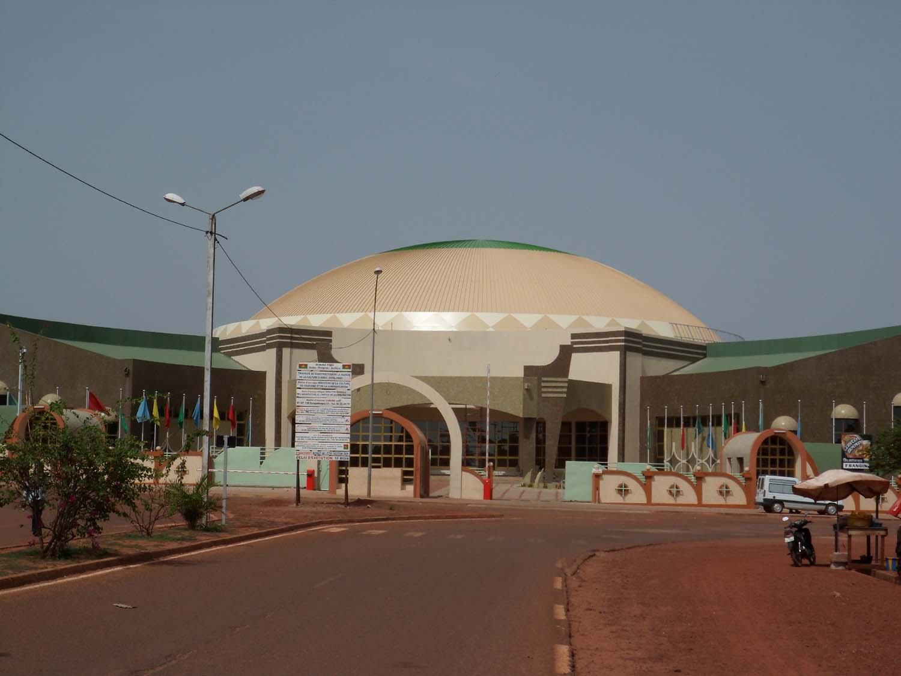
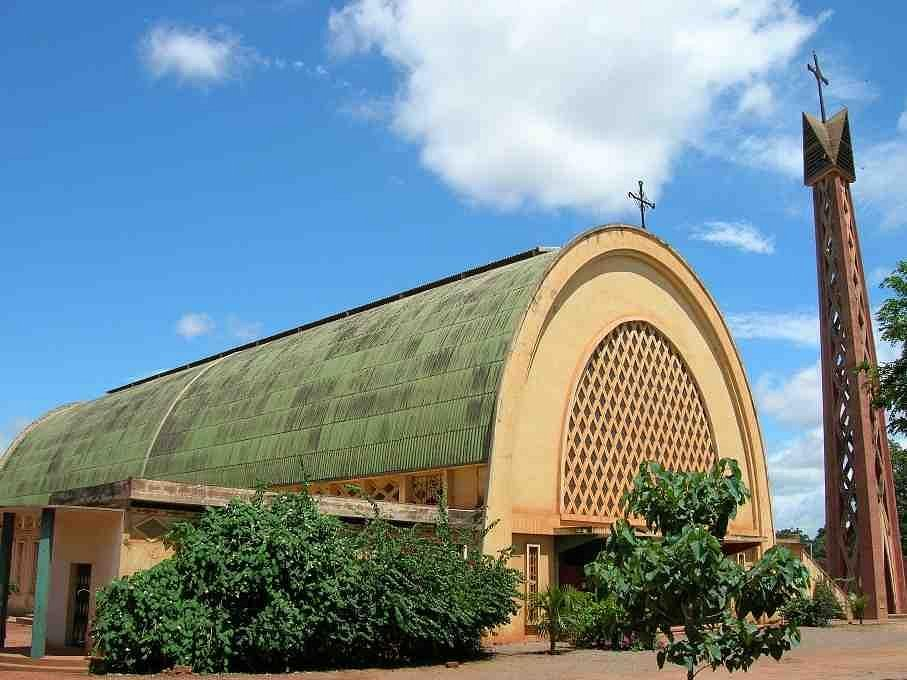

Grande Mosquée de DioulassobaLe Musée Communal Sogossira Sanon

La Maison de la cultureLe Marché Central de Bobo-DioulassoLe village ArtisanalLe Mausolée Guimbi OUATTARA

Paroisse Cathédrale Notre-Dame-De-LourdesLa Guinguette de DinderessoLa Gare Ferroviaire SITARAILLe Monument de la Paix